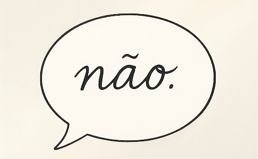
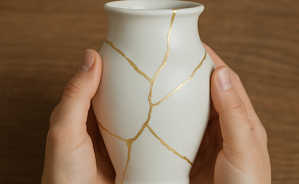

O que os filhos aprendem quando os adultos nomeiam emoções
Veja por que nomear emoções na parentalidade ajuda no desenvolvimento emocional e fortalece o vínculo com os filhos.
Ler artigoAcredito que o conhecimento liberta e acolhe. Escrever é uma das formas que encontrei de estender o cuidado do consultório para o seu dia a dia.
No meu blog, compartilho textos, reflexões e ferramentas práticas sobre ansiedade, autocobrança, parentalidade saudável e os desafios da vida adulta. Um espaço para você ler no seu tempo e se reconectar consigo mesmo.
Veja por que nomear emoções na parentalidade ajuda no desenvolvimento emocional e fortalece o vínculo com os filhos.
Ler artigoAprenda a identificar sinais físicos e regular emoções com micro-exercícios simples. Escute seu corpo antes que ele grite.
Ler artigo
Aprenda a dizer “não” com clareza e leveza. Frases prontas e dicas práticas para comunicar limites sem culpa nem conflito.
Ler artigoDescubra como as crenças centrais moldam emoções, relações e escolhas — e como começar a reescrever suas próprias histórias.
Ler artigo
Descubra a diferença entre culpa e responsabilidade e veja como a TCC pode ajudar a transformar o peso do erro em aprendizado.
Ler artigo
Uma reflexão sobre recomeços, tempo e autocompaixão. Será que existe idade certa para mudar de rota ou começar de novo?
Ler artigo